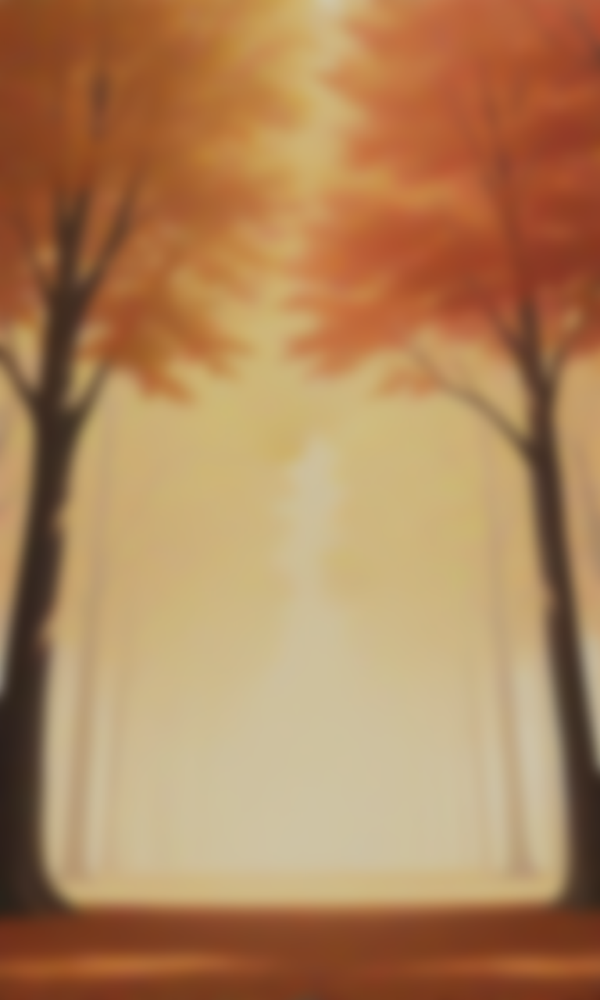
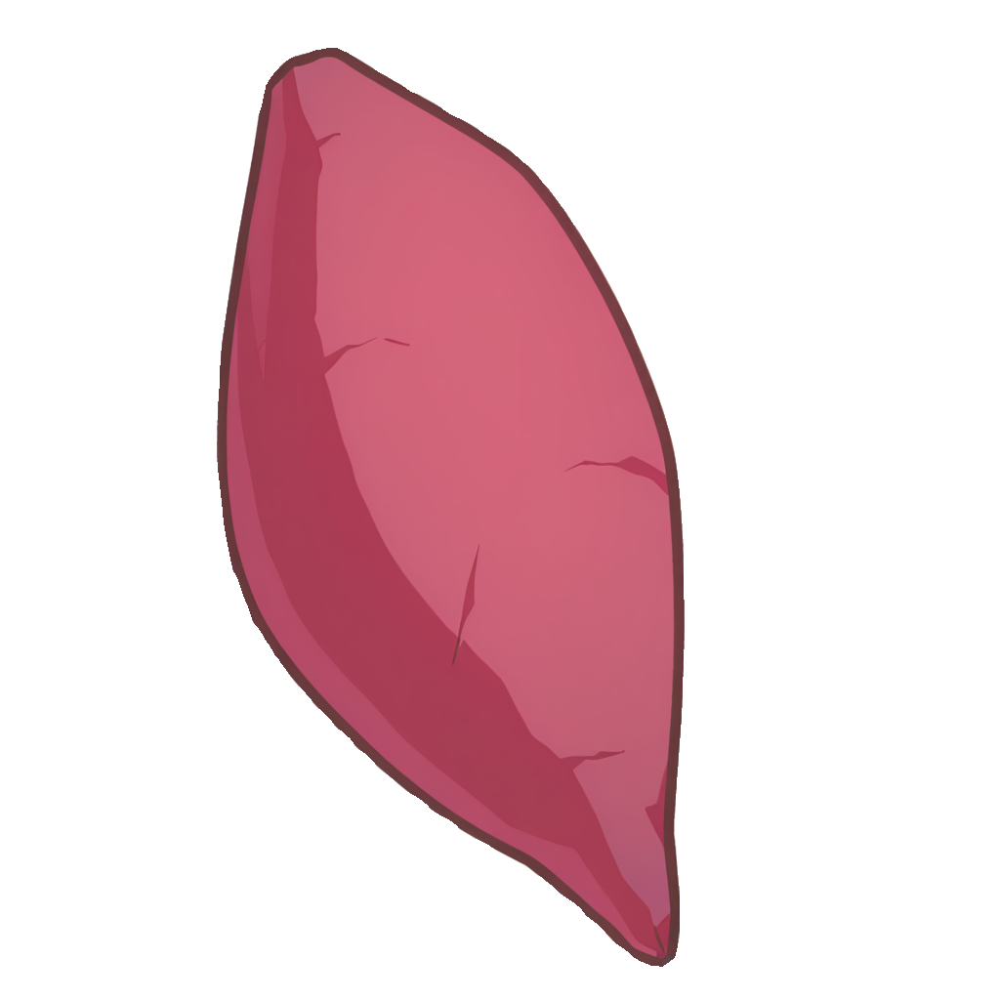

す<!DOCTYPE html>
<html lang="ja">
<head>
  <meta charset="UTF-8" />
  <meta name="viewport" content="width=device-width, initial-scale=1.0" />
  <title>めいっ狐のお芋キャッチ - タイトル</title>
  <style>
    * {
      box-sizing: border-box;
      margin: 0;
      padding: 0;
    }
    body {
      background: #000;
      font-family: "Noto Sans JP", system-ui, -apple-system, BlinkMacSystemFont,
        "Segoe UI", sans-serif;
      overflow: hidden;
    }
    .title-wrap {
      position: relative;
      width: 100vw;
      height: 100vh;
      overflow: hidden;
    }
    /* 背景：上下黒帯あり */
    .bg {
      position: absolute;
      inset: 0;
      width: 100%;
      height: 100%;
      object-fit: contain;   /* ★ cover → contain に変更 */
      object-position: top;
      z-index: 0;
    }
    /* タイトル文字 */
    .title-text {
      position: absolute;
      top: 8%;
      left: 50%;
      transform: translateX(-50%);
      font-size: 1.6rem;
      letter-spacing: 0.3rem;
      color: #ffe7f5;
      text-shadow: 0 0 6px rgba(0, 0, 0, 0.5);
      z-index: 2;
      white-space: nowrap;
    }
    /* キャラ */
    .character {
      position: absolute;
      bottom: 22%;
      left: 50%;
      /* transform は JS 側で入れるのでここでは無し */
      height: 34vh;
      width: auto;
      max-width: 260px;
      z-index: 3;
      pointer-events: none;
    }
    /* 芋（タイトル演出用） */
    .imo {
      position: absolute;
      width: 8vh;
      max-width: 80px;
      top: -15vh;
      left: 50%;
      transform: translateX(-50%);
      z-index: 2;
      opacity: 0;
      pointer-events: none;
    }
    /* スタートボタン */
    .start-btn {
      position: absolute;
      left: 50%;
      bottom: 8%;
      transform: translateX(-50%);
      padding: 12px 40px;
      border-radius: 999px;
      border: none;
      font-size: 1.1rem;
      font-weight: 600;
      background: #ff83b7;
      color: #fff;
      box-shadow: 0 4px 10px rgba(0, 0, 0, 0.35);
      cursor: pointer;
      z-index: 4;
      display: none;
    }
    .start-btn:active {
      transform: translateX(-50%) translateY(1px);
      box-shadow: 0 2px 6px rgba(0, 0, 0, 0.4);
    }
    /* クレジット */
    .credit {
      position: absolute;
      bottom: 2%;
      width: 100%;
      text-align: center;
      font-size: 0.75rem;
      color: #fff9;
      text-shadow: 0 0 4px rgba(0, 0, 0, 0.7);
      z-index: 4;
    }
  </style>
</head>
<body>
  <div class="title-wrap">
    
    <div class="title-text">めいっ狐のお芋キャッチ</div>

    <!-- キャラ（最初は通常顔） -->
    

    <!-- 落ちてくる芋 -->
    

    <!-- スタートボタン -->
    <button class="start-btn" id="startBtn">ゲームスタート</button>

    <div class="credit">
      ※ 画像生成：PixAI / キャラクター：姪っ狐　※ 補助：ChatGPT
    </div>
  </div>

  <script>
    const charImg = document.getElementById("character");
    const imoImg = document.getElementById("imo");
    const startBtn = document.getElementById("startBtn");

    const IMG_NORMAL    = "images/normal.png";
    const IMG_SURPRISED = "images/surprised.png";
    const IMG_SMIRK     = "images/smirk.png";

    let charX;              // キャラの「中央」のX座標(px)
    let direction = 1;      // 1: 右, -1: 左
    let speed = 1.2;        // 1フレームあたりの移動量(px)
    let turnCount = 0;      // 何回折り返したか
    let animRunning = true; // タイトル演出中フラグ

    // 画面サイズに応じて安全な移動範囲を決める
    function getBounds() {
      const w = window.innerWidth;
      const charWidth = charImg.getBoundingClientRect().width || 200;
      const margin = 24; // 画面端から少し余白
      const minX = margin + charWidth / 2;
      const maxX = w - margin - charWidth / 2;
      return { minX, maxX };
    }

    // キャラの位置＆向き反映
    function setCharPosition(x) {
      charImg.style.left = x + "px";
      // 左右反転＋中心合わせ（transformはここで一括管理）
      charImg.style.transform = `translateX(-50%) scaleX(${direction})`;
    }

    // タイトル用 左右移動アニメーション
    function moveCharacter() {
      if (!animRunning) return;

      const { minX, maxX } = getBounds();
      charX += direction * speed;

      // はみ出さないようにクランプ
      if (charX < minX) {
        charX = minX;
        direction = 1;
        turnCount++;
      } else if (charX > maxX) {
        charX = maxX;
        direction = -1;
        turnCount++;
      }

      setCharPosition(charX);

      // 2往復（=4回折り返し）したら演出を終了して芋を落とす
      if (turnCount >= 4) {
        animRunning = false;
        // 中央付近で止める
        const centerX = (minX + maxX) / 2;
        charX = centerX;
        setCharPosition(charX);
        dropImo();
        return;
      }

      requestAnimationFrame(moveCharacter);
    }

    // 芋を上から落としてカゴにIN → 表情切替 → ボタン表示
    function dropImo() {
      const charRect = charImg.getBoundingClientRect();

      // 芋の開始位置（画面上の方）
      let y = -80;
      imoImg.style.opacity = 1;

      // 芋のXはキャラの中央に合わせる
      const charCenterX = charRect.left + charRect.width / 2;
      imoImg.style.left = charCenterX + "px";

      // ★ カゴあたりの高さに調整（頭じゃなく下の方）
      const basketY = charRect.top + charRect.height * 0.65;

      function fall() {
        y += 6; // 落下速度
        imoImg.style.top = y + "px";

        if (y >= basketY) {
          // カゴに入った扱い：芋を消す
          imoImg.style.opacity = 0;

          // 表情：ビックリ → ニヤ
          charImg.src = IMG_SURPRISED;
          setCharPosition(charX); // 反転状態を維持

          setTimeout(() => {
            charImg.src = IMG_SMIRK;
            setCharPosition(charX);
            // スタートボタンを表示
            startBtn.style.display = "inline-block";
          }, 450);

          return;
        }
        requestAnimationFrame(fall);
      }
      requestAnimationFrame(fall);
    }

    // スタートボタンでゲーム本編へ
    startBtn.addEventListener("click", () => {
      // game.html など本編のURLに変更してね
      window.location.href = "game.html";
    });

    // 初期配置
    window.addEventListener("load", () => {
      // 画像ロード後に安全な中央からスタート
      const { minX, maxX } = getBounds();
      charX = (minX + maxX) / 2;
      setCharPosition(charX);

      // 少し待ってからアニメ開始
      setTimeout(() => {
        requestAnimationFrame(moveCharacter);
      }, 500);
    });

    // 画面回転などでズレたときの保険
    window.addEventListener("resize", () => {
      if (!animRunning) {
        const { minX, maxX } = getBounds();
        charX = (minX + maxX) / 2;
        setCharPosition(charX);
      }
    });
  </script>
</body>
</html>
